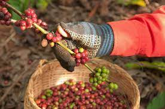
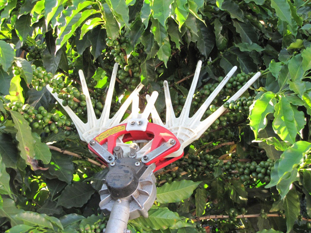
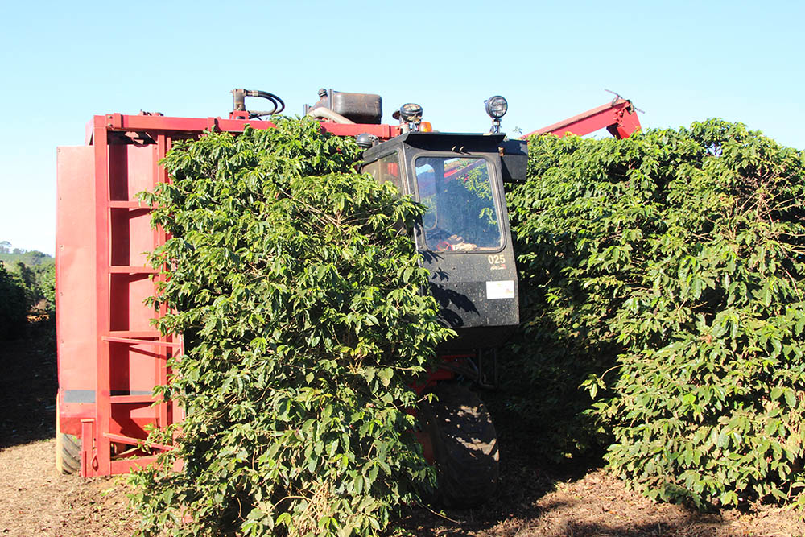

Пикинг - Этот метод считается наиболее элитным, потому что обеспечивает высокое качество собранных зёрен. Суть метода очень проста: пикеры (сборщики урожая) вручную собирают с веток только спелые кофейные ягоды. Неспелые ягоды они оставляют на дереве, чтобы собрать позже. Переспелые или гнилые ягоды собирают в отдельную тару, чтобы они не навредили дереву.
Ручной метод используют для сбора спешелти кофе и микролотов. С одной стороны, кофе, собранный таким методом, очень качественный, потому что содержит только спелые ягоды. С другой — уровень трудо- и материальных затрат на сбор ручным методом сильно выше, чем любым другим. Кроме прочего, ручной сбор позволяет пикерам отслеживать состояние здоровья у деревьев. Недостатки способа: скорость сбора крайне медленная.
Ручной стриппинг - Это тоже ручной метод сбора, но он считается примитивным. Суть метода: пикеры надевают перчатку на руку, зажимают ветку кофейного дерева или куста у основания и проводят рукой к концу ветки. В это время ягоды кофе ссыпаются на специально подстеленный на землю брезент, плёнку или в корзину пикера. Стриппинг используют, чтобы собирать коммерческий кофе, потому что при таком методе пикеры срывают всё подряд: спелые, зелёные и переспелые зёрна, ветки и листья.
Механический стриппинг - Этот метод отличается от ручного стриппинга тем, что кофе срывают не руками, а специальными приспособлениями — деррикадейрами (derricadeiras исп.). Деррикадейра — это механический стриппер в виде палки с вибрирующими наконечниками, напоминающими руки. Принцип работы с ними такой же, как и с руками: пикеры проводят механическими стрипперами по веткам, а сорванные ягоды падают на брезент или плёнку.
Механический сбор - Этот метод полностью механический, в нём используют специальные машины, которые были изобретены в 70-х годах. Машины оборудованы вращающимися щётками или вибраторами, которые прикрепляются к стволу дерева. От щёток или вибраций кофейные ягоды падают в специальные корзины.
Этот метод считается одним из самых производительных, но есть свои последствия. Например, во время механического сбора машины повреждают ветки и листья, а кроме спелых ягод в урожай попадают и зелёные. Однако эти последствия можно минимизировать, если правильно настроить скорость вращения щёток или интенсивность вибрации, и тщательно контролировать качество после сбора урожая.
Метод сбора урожая — это совокупность множества факторов. И не всегда фермеры вольны выбирать тот, который им больше нравится. Чаще они должны учитывать рельеф плантации, экономические и социальные факторы. Главное, чтобы выбранный метод был наиболее подходящим для каждой конкретной фермы.
Да, ручной сбор лучше всего сохраняет ягоды и уберегает от зелёных или перезревших плодов. Однако на плантации в сотни гектар собирать кофе вручную — безумно дорого.
Да, если собирать кофе механически, там будет больше лишнего: зелёные и перезревшие ягоды, ветки и листья. Но если хорошо контролировать качество после сбора урожая, эти недостатки можно уменьшить. Хороший фермер, заботящийся о вкусе его кофе, всегда найдёт метод, который будет максимально вписываться во все вышеперечисленные факторы.